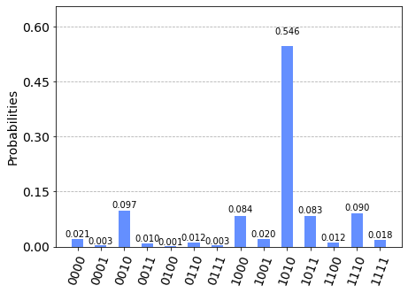
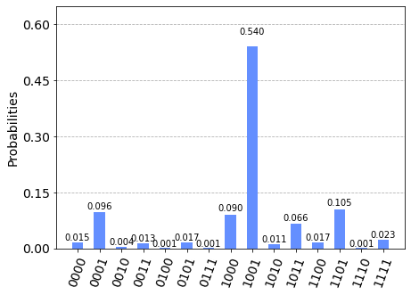

Measurement Incompatibility Testing¶
# Make sure to load your IBM Q token before running the below block
# Importing standard Qiskit libraries and configuring account
from qiskit import QuantumCircuit, execute, Aer, IBMQ
from qiskit.compiler import transpile, assemble
from qiskit.tools.jupyter import *
from qiskit.visualization import *
from qiskit.providers.ibmq.managed import IBMQJobManager
# Loading your IBM Q account(s)
provider = IBMQ.load_account()
import matplotlib.pyplot as plt
import numpy as np
# custom code
import context
from device_independent_test import incompatible_measurement
ibmqfactory.load_account:WARNING:2020-06-25 13:41:58,859: Credentials are already in use. The existing account in the session will be replaced.
def bb84_states():
# Alice's half of the circuit
# creates 0,1,+,-
qc = QuantumCircuit(4)
qc.x(1) # create 1
qc.h(2) # create +
qc.x(3) # create -
qc.h(3) # ^
return qc
def measure_circuit(y):
# Bob's measurement circuit
# measure in either pi/4 or 3pi/4 basis
assert y == 0 or y == 1, "Bob's input should be 0 or 1"
qc = QuantumCircuit(4)
theta = -1.0*(np.pi/4 + 0.5*y*np.pi)
qc.u3(theta,0,0,range(0,4))
#qc.u3(theta,0,0,1)
#qc.u3(theta,0,0,2)
#qc.u3(theta,0,0,3)
qc.measure_all()
return qc
qc = bb84_states() + measure_circuit(0)
qc.draw()
┌───────────────┐ ░ ┌─┐
q_0: ┤ U3(-pi/4,0,0) ├───────────────────────────────────░─┤M├─────────
└─────┬───┬─────┘┌───────────────┐ ░ └╥┘┌─┐
q_1: ──────┤ X ├──────┤ U3(-pi/4,0,0) ├──────────────────░──╫─┤M├──────
├───┤ ├───────────────┤ ░ ║ └╥┘┌─┐
q_2: ──────┤ H ├──────┤ U3(-pi/4,0,0) ├──────────────────░──╫──╫─┤M├───
├───┤ └─────┬───┬─────┘┌───────────────┐ ░ ║ ║ └╥┘┌─┐
q_3: ──────┤ X ├────────────┤ H ├──────┤ U3(-pi/4,0,0) ├─░──╫──╫──╫─┤M├
└───┘ └───┘ └───────────────┘ ░ ║ ║ ║ └╥┘
meas_0: ═══════════════════════════════════════════════════════╩══╬══╬══╬═
║ ║ ║
meas_1: ══════════════════════════════════════════════════════════╩══╬══╬═
║ ║
meas_2: ═════════════════════════════════════════════════════════════╩══╬═
║
meas_3: ════════════════════════════════════════════════════════════════╩═
# OUTDATED CODE
# SEE CELL BELOW FOR BATCH JOB
from qiskit.tools.monitor import *
def run_job(qc):
# runs test on all inputs
# run cicuits in one batch
#job_manager = IBMQJobManager()
#job_set = job_manager.run([qc_0, qc_1], backend=provider.get_backend('ibmq_qasm_simulator'), name='msrincom_test')
#job_monitor(job_set)
#job_set.error_message()
job = execute(qc, backend=provider.get_backend('ibmq_qasm_simulator'), shots=1000)
job_monitor(job)
return job
qc_0 = bb84_states() + measure_circuit(0)
job = run_job(qc_0)
job.result().get_counts(qc_0)
plot_histogram(job.result().get_counts(qc_0))
Job Status: job has successfully run

from qiskit.tools.monitor import *
def run_jobs(qc):
# run cicuits in one batch
job_manager = IBMQJobManager()
job_set = job_manager.run(qc, backend=provider.get_backend('ibmq_qasm_simulator'), name='msrincom_test')
job_set.error_messages()
return job_set
qc_0 = bb84_states() + measure_circuit(0)
qc_1 = bb84_states() + measure_circuit(1)
managed_job = run_jobs([qc_0,qc_1])
result_0 = managed_job.job(0)[0].result()
result_1 = managed_job.job(1)[0].result()
#managed_job.job(0)[0].error_message()
result_0.get_counts(qc_0)
{'1011': 85,
'0000': 17,
'0001': 2,
'1001': 23,
'1111': 20,
'1100': 18,
'1010': 524,
'0010': 104,
'0100': 4,
'0111': 3,
'1101': 4,
'0110': 10,
'1110': 94,
'1000': 105,
'0011': 11}
qc_1 = bb84_states() + measure_circuit(1)
job2 = run_job(qc_1)
job2.result().get_counts(qc_1)
plot_histogram(job2.result().get_counts(qc_1))
Job Status: job has successfully run

counts = job2.result().get_counts(qc_1)
print(counts)
# 2x4 matrix for probabilities
# row for x
# column for y
bins = (2,4)
bins = np.zeros(bins)
# iterate over dictionary
for state in counts:
for i in range(0,4):
r = int(state[i])
c = 3 - i
bins[r,c] += counts[state]
print(bins)
# convert bins to probibilities
probs = bins / 1000.0
print(probs)
{'1011': 78, '0000': 11, '0001': 103, '1001': 523, '1111': 17, '1100': 14, '0101': 19, '1010': 16, '0111': 3, '1101': 103, '0110': 1, '1110': 5, '1000': 91, '0011': 16}
[[138. 864. 838. 153.]
[862. 136. 162. 847.]]
[[0.138 0.864 0.838 0.153]
[0.862 0.136 0.162 0.847]]
from qiskit.quantum_info import Statevector
qc = bb84_states()
state = Statevector.from_instruction(qc)
print(state)
real_state = [0,0,0.5+0.j,0,0,0,0.5,0,0,0,-0.5,0,0,0,-0.5,0]
print(state.data)
print(state.data == real_state)
print(state.data[2])
error = abs(state.data-real_state)
epsilon = 1.0E-4
any(x>epsilon for x in error)
Statevector([ 0. +0.j, 0. +0.j, 0.5+0.j, 0. +0.j, 0. +0.j, 0. +0.j,
0.5+0.j, 0. +0.j, 0. +0.j, 0. +0.j, -0.5+0.j, 0. +0.j,
0. +0.j, 0. +0.j, -0.5+0.j, 0. +0.j],
dims=(2, 2, 2, 2))
[ 0. +0.j 0. +0.j 0.5+0.j 0. +0.j 0. +0.j 0. +0.j 0.5+0.j 0. +0.j
0. +0.j 0. +0.j -0.5+0.j 0. +0.j 0. +0.j 0. +0.j -0.5+0.j 0. +0.j]
[ True True False True True True False True True True False True
True True False True]
(0.4999999999999999+0j)
False